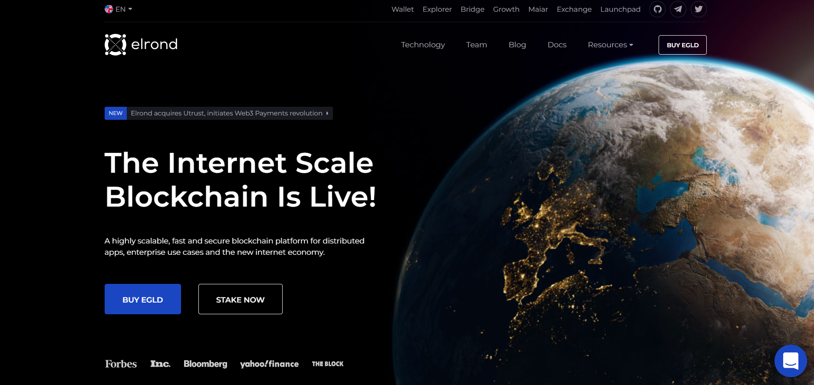

Elrond, aussi reconnu avec son ticker EGLD, est une blockchain open source et décentralisée. Son objectif est commun à celui d’autres protocoles : permettre une validation rapide des transactions, à moindre coût, qu’il soit financier ou énergétique. Pour ce faire, Elrond utilise ce que l’on appelle le sharding, que nous présenterons dans la partie suivante.
Ce protocole voit les choses en grand. Il se désigne lui-même comme un projet à destination du futur 🤖. Pour les fondateurs, ce futur, c’est la finance décentralisée (DeFi), l’internet des objets (IoT) et les fintechs. Elrond permet d’exécuter des smart contracts, qui seront alors déployés pour les projets de ces secteurs.
Les smart contracts sont des algorithmes qui s’exécutent automatiquement dès qu’une condition de déclenchement est remplie. Le concept a été démocratisé par la blockchain Ethereum, qui voyait là une limite à la blockchain Bitcoin.
Le projet Elrond, avec sa crypto EGLD, naît en 2017. Trois Roumains l’ont fondé : les frères Lucian et Benjamin Mincu, ainsi que Lucian Todea (voir l’équipe ici). Les trois connaissaient plutôt bien l’écosystème des crypto monnaies et s’y impliquaient depuis plusieurs années. Elrond est un peu un OVNI au sein de l’univers crypto, car c’est le seul projet d’envergure venant d’Europe de l’Est.
La mise en ligne du réseau principal (mainnet) d’Elrond a eu lieu au cours de l’été 2020. Elrond reste alors un projet de niche, dont seuls les connaisseurs ont entendu parler. En effet, il s’attaque aux problèmes d’évolutivité de la blockchain, allant ainsi plus loin que le problème classique de la scalabilité (capacité à traiter de nombreuses transactions et rapidement).
Elrond est une blockchain Layer-1, c’est-à-dire une blockchain d’exécution pour le fonctionnement d’applications décentralisées et la validation des transactions. Pour cette dernière, elle utilise le mécanisme de consensus de la Proof of Stake (preuve d’enjeu en bon français).
Blockchain, Proof-of-Stake, finance décentralisée… besoin d’apprendre ou de réviser les classiques ? Consultez notre article d’introduction à la crypto !
Cependant, contrairement à d’autres blockchains, Elrond n’utilise pas le PoS classique, mais la SPoS, la preuve d’enjeu sécurisée (Secure Proof-of-Stake). Comme pour la PoS classique, la SPoS demande aux validateurs d’immobiliser une large quantité de jetons, leur permettant ainsi de valider des transactions. Mais, dans le consensus SPoS, on ne donne pas la part belle aux « riches» et les validateurs sont choisis de manière aléatoire grâce à un ingénieux système de notation. Ainsi, chaque transaction est validée, non pas par l’un de ceux qui a immobilisé le plus de jetons, mais par celui qui a été choisi par le système. C’est donc un consensus théoriquement impartial.
Nous l’avons rapidement évoqué en introduction. Le sharding est l’élément central du protocole Elrond. Concrètement, cela signifie qu’il est en quelque sorte découpé en plusieurs fragments ou shards (dans la langue de Shakespeare).
Une équipe de validateurs se voit confier la validation des transactions et la sécurisation de son fragment. Les validateurs ont ainsi moins de transactions en liste d’attente et peuvent valider de manière plus rapide. En outre, les fragments sont interconnectés les uns avec les autres.
Une fois que les transactions ont été validées, elles passent sur le réseau principal (mainnet) et sont ajoutées à la blockchain Elrond. Le sharding est un véritable progrès qui va au-delà de la scalabilité, de la baisse des coûts et de la rapidité des transactions. C’est pour cela que l’on parle d’évolutivité, avec l’obligation d’interconnecter les fragments tout en conservant la sécurité et la rapidité d’un protocole en consensus PoS.
EGLD est le jeton natif du protocole Elrond. Il signifie Electronic Gold (e-Gold), mais n’a pas de rapport avec le métal jaune.
Comme tout jeton natif, l’EGLD a deux fonctionnalités. La première, c’est d’être la pierre angulaire du réseau, en permettant la rémunération des validateurs participant au protocole. Il alimente le réseau en servant de moyen d’échange entre les utilisateurs, développeurs et validateurs. Les frais de transaction sont en effet payés en crypto EGLD par les deux premiers, au bénéfice des validateurs.
Ensuite, c’est un jeton de gouvernance. Les détenteurs d’EGLD peuvent donc proposer des améliorations du protocole et voter pour d’autres propositions.
Le jeton EGLD est disponible sur toutes les grandes plateformes d’échange. Vous pourrez vous en procurer sur la plateforme Coinhouse (notre avis sur Coinhouse ici) ou bien encore sur la plateforme Kraken par exemple (notre avis sur Kraken ici).
Principalement développé par Elrond, le sharding est aujourd’hui à la mode au sein de l’écosystème crypto, avec notamment Polkadot et surtout Ethereum (on y vient). Elrond a donc une réputation de protocole sérieux et ayant permis une évolution importante dans la blockchain.
En combinant sharding et consensus SPoS, Elrond a donc révolutionné le secteur. Le projet a ensuite mis au point le wallet Maiar, permettant des transferts plus rapides et de faibles coûts de transaction.
Mais Maiar va plus loin que ça et certains le comparent à l’application mobile Lydia. En plus de permettre l’envoi et la réception de cryptos, on peut y faire des pots communs.
Cependant, Elrond reste un projet plutôt confidentiel, qui fait peu de marketing. La crypto EGLD reste donc relativement peu connue, malgré l’excellence technique du projet associé. Elrond subit ainsi de manière frontale la concurrence.
Le principal danger pour Elrond n’est pas lui-même, mais la concurrence. Ainsi, on le considère comme un énième Ethereum Killer, aux côtés de Cardano (ADA), Avalanche (AVAX) ou Polygon (MATIC).
Moins médiatique que les autres, Elrond souffre un peu de la comparaison, alors que le protocole est objectivement plus intéressant que certains d’entre eux. Surtout, d’autres initiatives ont commencé à adopter le sharding. L’actualité à ce sujet doit donc être surveillée avec attention.
Mais le concurrent le plus important, cela va devenir Ethereum lui-même. En effet, la mise à jour en passant de la preuve de travail ou PoW (Proof-of-Work) à la Proof-of-Stake (PoS) est imminente. Cette mise à jour prévoit également la mise en place du sharding dans la nouvelle blockchain Ethereum. Elrond n’aura donc plus l’exclusivité de cette évolution technique.
Si la mise à jour se passe bien, nul doute qu’elle ne sera pas un bon signe pour Elrond. À moins d’une adoption massive de la blockchain, comme lorsqu’internet a commencer à exploser et arriver dans tous les foyers. Nous aurions alors besoin de tous les protocoles concurrents pour répondre à l’ensemble des besoins, incluant Elrond.
Envie de découvrir d’autres possibilités d’investissement ? Découvrez notre sélection de crypto monnaies prometteuses !